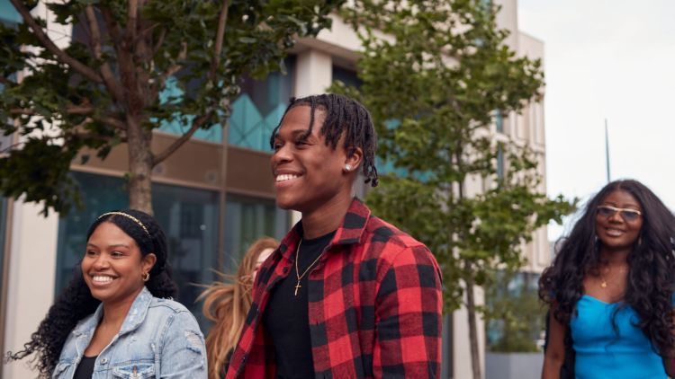
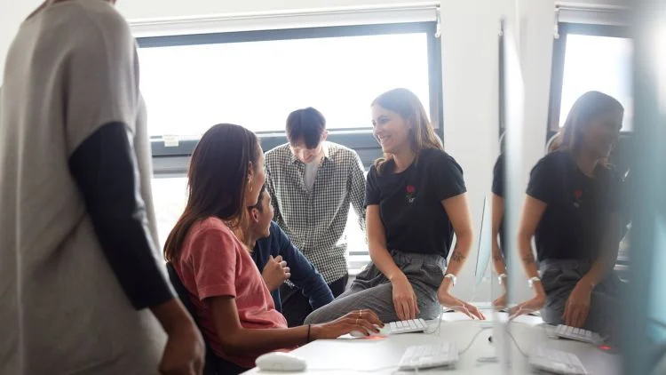
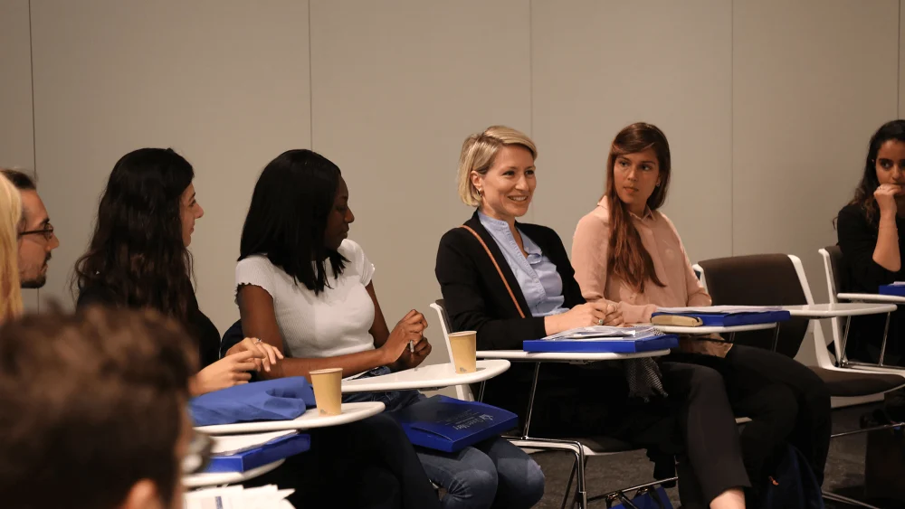
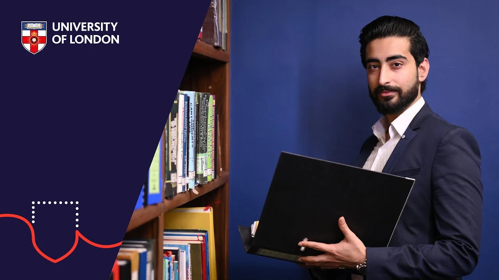

“The LLM gave me the credibility to walk into rooms I'd previously only watched from the doorway.”
Sara Ahmed
Documentation
Drop-in replacements for the existing Drupal slices, plus new patterns for vertical content. Every play surface opens in the same gallery-aware modal that supports keyboard and swipe navigation between videos in a set. Play buttons have moved from squares to circles so they read as video affordances rather than standard CTAs. The hero now carries a single, hard-to-miss video CTA with context — a thumbnail, label, and runtime — so users land on the page already knowing there's a film to watch.
00 / Slice
Programme hero · stacked title + media band
Set out on the path to becoming a lawyer with a flexible LLB programme that fits around you. Unlock a fast‑track route to graduate sooner if you already have a degree.
01 / Slice
VideoObject structured data emitted server‑side from the Media metadata.Default · 16:9 with transcript

A walk‑through of how online LLB students structure their week — recorded lectures, weekly seminars, peer study groups, and the moots that bring case study work to life. Filmed with current students in Pakistan, Sri Lanka, and the UK.
Vertical · 9:16 with side caption

Maarij records a 60‑second snapshot of his day — recorded lectures over breakfast, online library at lunchtime, and a mooting practice call with study group on the way home. A first‑hand glimpse of how online study fits around real life.
02 / Slice
Image & video carousel · "See" pattern

Senate House — the heart of the University of London federation
A typical study setup — distance learning from Karachi
A day in Karachi with Khadija — LLB, second year

Inside the Online Library — every case, every textbook
Graduation 2025, Colombo — a class of 312 students

Three things that worked — Maarij's study tips
LLM graduation cohort — Bloomsbury, summer 2025
03 / Slice
Layout · 1 video
“The LLM gave me the credibility to walk into rooms I'd previously only watched from the doorway.”
Sara Ahmed
Layout · 2 videos
“My favourite thing about the study experience has been meeting a diverse group of people from all backgrounds in Pakistan.”
Khadija Joher
“My favourite thing was how the LLB made us think outside the box. It made you grow as an individual.”
Nilmini Kumari Fernando
Layout · 3 videos · 16:9 grid
“Meeting a diverse group of people from all backgrounds in Pakistan.”
Khadija Joher

“Sixty seconds: the moment everything clicked.”
Farzad Bin Raunak
“My degree laid the perfect foundation for my chosen career.”
Ahmed Imran Dewan
04 / Slice
1+3 asymmetric · “Study with us”
05 / Slice
Inline article · video embedded in copy
The University of London's distance‑learning model isn't a recent pivot — it's been running for over 160 years. Here's what a week looks like for one of our LLB students.
When students sign up for the LLB programme, they often picture textbooks and silent libraries. The reality is closer to a well‑run study group that happens to span four time zones. We asked Khadija — second year, based in Karachi — to record a short walk‑through of her week so prospective students can see the rhythm of the course, not just read about it.
A week with Khadija. Filmed in Karachi, March 2026. Running time 3:42.
The seminar discussions, she says — twelve countries on the cohort and a tutor who refuses to let any single perspective dominate. The mooting practice on Saturday afternoons. And the fact that “the online library is genuinely better than the one I used as an undergraduate, in person.”
06 / New pattern
data-video-vertical is set.00:00 — Welcome. I'm going to show you what a typical week looks like as a distance‑learning LLB student.
00:18 — Most modules release a new video lecture on Monday morning. I'll usually watch the first two before lunch and make rough notes.
00:42 — The Online Library is where I do most of my legwork. Cases, journal articles, textbooks — everything's there. I don't buy physical books any more.
01:30 — Tuesday and Wednesday I'll spend on the formative tasks. They're not assessed, but they tell me whether I've understood the material before I move on.
02:05 — Thursday is the live tutorial. About forty of us on the call, the tutor walks us through a scenario and we answer in real time. It's the closest thing to a seminar.
02:48 — Fridays I keep deliberately light — readings only, no writing. By the time the weekend comes I'm ready to draft the week's essay.
03:30 — That's roughly what each week looks like. It's flexible — I work full‑time, so I move things around — but the structure is what stops it from drifting.
00:00 — My name is Khadija. I'm in my second year of the LLB, studying from Karachi.
00:14 — I chose the University of London because I wanted a UK law degree without leaving home. My family is here, my work is here.
00:42 — A typical study day is split. I work in a law firm in the morning, then I study from about six in the evening until ten.
01:15 — The hardest part was learning to manage my own time. There's no one telling you when to start.
01:48 — But the support is there if you ask. The student forums, the tutors — you have to reach out, but they always respond.
02:20 — I'd tell anyone considering it: it's harder than you think, but it's also more flexible than you think. You can build it around your life.